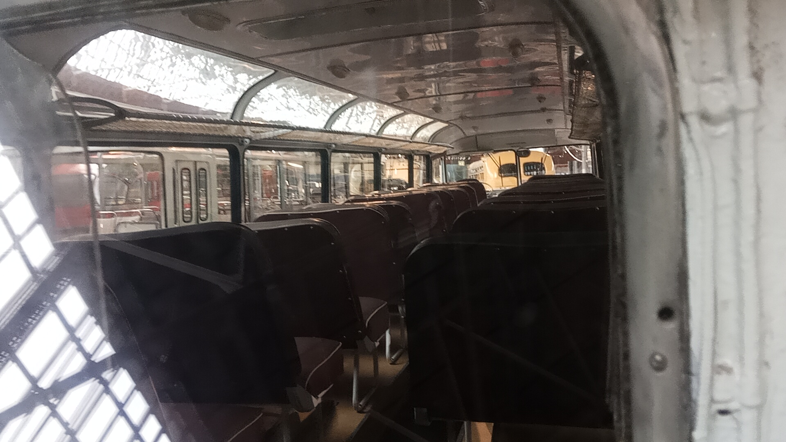

Ikarus 55 (конец 1950-х)
Перед вами легендарный венгерский междугородный и туристический автобус с несущим кузовом вагонной компоновки. Данный экземпляр был выпущен в конце 1950-х годов на заводе Ikarus и сейчас является частью коллекции Музея Транспорта Москвы.
«Икарусы» превосходили аналогичные по вместимости львовские автобусы экономичностью дизельного двигателя и комфортабельностью. Более половины произведённых в Венгрии в 1953–1972 годах машин отправлялось в СССР.
Общая информация об экспонате
🏭 Производство
Завод-изготовитель: Завод кузовов и транспортных средств Ikarus (Венгрия)
Модель: Ikarus 55
Годы выпуска модели: 1953–1972
Год выпуска экспоната: Конец 1950-х
📍 Текущее состояние
Местонахождение: Музей Транспорта Москвы
Состояние: Не эксплуатируется (музейный экспонат)
Назначение: Историческая экспозиция
Особенность: Более половины всех машин ушло в СССР
⭐ Легенда СССР: В Советском Союзе на момент появления «Икарус-55» просто отсутствовали серийные автобусы для междугородных поездок. На дальних маршрутах обычно использовали городские ЗИС-155. «Икарус-55» пришёл на смену этим машинам и стал основным междугородным автобусом страны на долгие годы. Советские транспортники ценили его за экономичный дизель, комфортную подвеску и удобное место водителя с пневмоусилителем руля.
Технические характеристики
Основные параметры
Длина: 11,4 м
Ширина: 2,5 м
Высота: 2,87 м
Снаряжённая масса: 9500 кг
Максимальная скорость: 98 км/ч
Расход топлива: около 30 л/100 км
Силовая установка
Двигатель: Csepel D-614, дизельный
Объём: 8,28 л
Цилиндры: 6, рядный
Мощность: 145 л.с.
КПП: 5-ступенчатая механическая
Расположение: заднее, в корме
История модели и экспоната
Рождение «Сигары»
В начале 1950-х годов фирма Ikarus приступила к разработке принципиально нового междугородного автобуса. Главной проблемой был шумный дизель — чтобы изолировать его от пассажиров, конструкторы разместили двигатель в корме. Так родился Ikarus 55 — первый заднемоторный автобус фирмы с несущим кузовом вагонного типа.
Первые поставки в СССР
В 1955 году в Советский Союз пришли первые «Икарус-55». Они сразу завоевали популярность: в стране остро не хватало междугородных автобусов, а венгерская машина с экономичным дизелем, комфортной подвеской и удобным местом водителя оказалась именно тем, что нужно.
Год выпуска экспоната
Именно эта машина сошла с конвейера завода Ikarus в конце 1950-х годов. Она успела застать расцвет эпохи междугородних поездок на «Сигарах» по просторам СССР.
Конец выпуска
В 1972 году выпуск «Икарус-55» был завершён. Всего в Венгрии с 1953 по 1972 год было произведено 7 466 машин. Последние «Икарус-55» ушли с междугородных трасс СССР только в начале 1980-х годов.
Сохранение для истории
Данный экземпляр был отреставрирован и занял достойное место в экспозиции Музея Транспорта Москвы. Это один из немногих сохранившихся представителей легендарной серии.
Интересный факт: Экземпляр из коллекции Музея транспорта Москвы приехал из Германии: в 1990-е годы он был передан в Москву как гуманитарная помощь и использовался как транспорт для инвалидов. Позже его выкупили и отреставрировали для музея.
Особенности конструкции
Заднемоторная компоновка
Главная особенность «Икарус-55» — двигатель в корме, изолированный от пассажирского салона. Это решение было принято из-за шумного дизеля. На ходу выхлопные газы не проникали в салон, а звук оставался позади.
Несущий кузов
Вагонный тип кузова без отдельной рамы. Для своего времени это было нестандартное решение, хотя советские ЗИС-127 уже были такими. Вдохновением для венгерских конструкторов послужил советский ЗИС-154, запущенный в серию чуть раньше.
Аэродинамичный дизайн
Вытянутая форма с обтекаемым профилем, за которую автобус получил прозвище «Сигара». Гребень на крыше — это воздухозаборник, а нагретый поток выводился через горизонтальные прорези в корме.
Комфорт для пассажиров
Версия «Люкс» для СССР оснащалась креслами с регулировкой наклона спинки, застеклёнными скатами крыши, хорошей вентиляцией (люки вместо кондиционеров), мягкой подвеской. В салоне — 31 сиденье плюс место для кондуктора или экскурсовода.
🎉 Символ эпохи: Ikarus 55 — один из самых узнаваемых междугородных автобусов СССР. Его можно было встретить на автовокзалах Москвы, Ленинграда, Риги, Таллина и других крупных городов. За надёжность автобус проходил без капремонта более миллиона километров.
Фотогалерея

Легендарная венгерская «Сигара».

Музейная информация об Ikarus 55.

Салон музейного экспоната Ikarus 55.
Нажмите на фото для увеличения
«У нас на тесте модель, которую многие называют самым красивым автобусом времен СССР — "Икарус-55". За вытянутую форму он еще получил прозвище "сигара"».